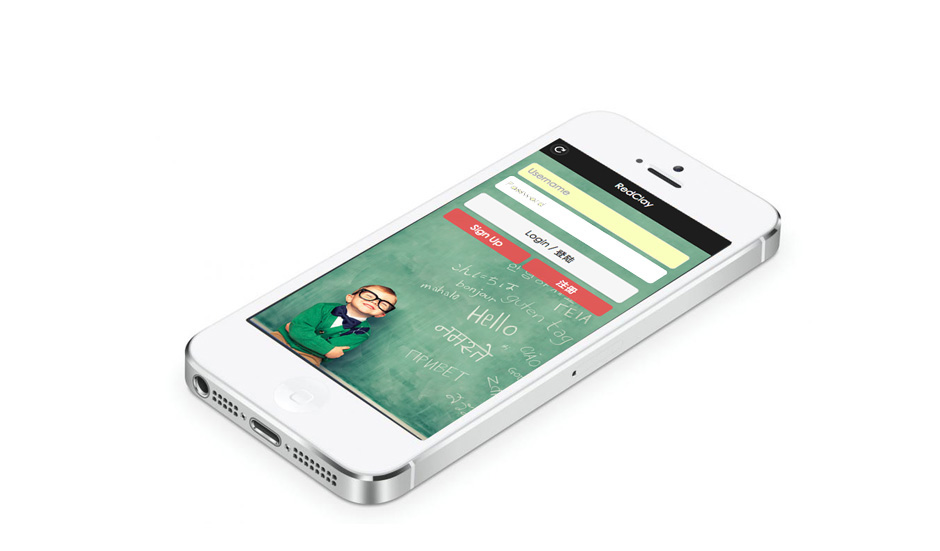
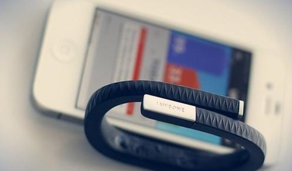
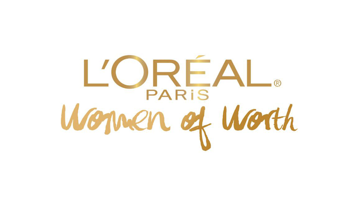
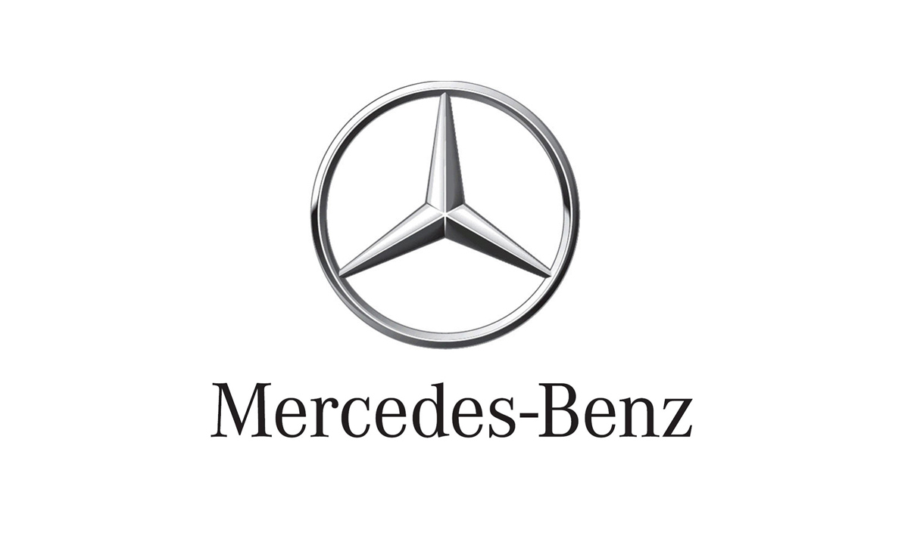

TING-YU TONY LIN
Actively seeking a internship of user experience and product management.
My name is Tony Lin. I am a graduate student at the Institute of Human Factors and Ergonomics, Tsinghua University, Beijing. My interested research themes is Human factor engineering, Human-Computer Interaction(HCI) and data analysis.
Always keeping my passions in improving user experience in service or product design, I have studied various research methodologies and data analysis methods to develop my analysis skills. Those experiences provide me a more professional and systematical way to understand users' needs and propose better solutions.
The rich experience of working in international teams boarden my horizons and build my communication skills. I like to study different professional areas, such as marketing, programming, cognitive analysis, etc. Therefore, I could take advantage of my comprehensive knowledge to face new chanllenges and opportunities of user research.
Interests
Product
Focus on produt management,features, marketing orientaion and strategies.
UX Research
Have an insight into the users' needs through different UX methodologies
Data Analysis
Get useful information to support decision making by data analysis.
Profilio

“Break the Language Great Wall” (RedClay): The Language Learning Application
Designed an mobile app to motivate learners to master foreign language by User Centered Design process.
2015 International conference on human-computer interaction.
(In press)
Oct,14 - Jan,15, Beijing
More
“Break the Language Great Wall” (RedClay): The Language Learning Application
Method: User Centered Design, Suervey, prototype
Developement: HTML/CSS/Javascript/PHP/MySQL
There are more and more people moving to China for Chinese- learning. We applied the concept of “language partner” to build a language learning application for two groups of people – foreigners in China eager to discover their host language and culture and Chinese citizens willing to improve their foreign tongues. This language learning application is called “RedClay”. “Red” is the color of China and “clay” is a material used for the construction of the Great Wall. RedClay, as a mobile-web application, mainly provides social networking and learning functions (including cultural support and preference- based vocabulary lists) to help people who want to improve their foreign language abilities meet each other in real life.
Close

How SNS and Wearable Devices Enhance Exercise Well-being of Chinese Females?
Explore the relationship between social network, wearable device and subjective well-being of Chinese females.
2015 International conference on human-computer interaction.(In press)
Oct,14 - Jan,15, Beijing
More
How Online Social Network and Wearable Devices Enhance Exercise Well-being of Chinese Females?
Method: Experience sampling, Sentiment analysis, Interview
Firstly, in the context of exercise, the current study explored the effects of online social network and wearable devices in the enhancement of Chinese females’ subjective well-being. An in-situ 2*2 experiment design was conducted. Result showed that online social network was significantly related to positive affects. Wearable devices didn’t show significance due to problems of accessibility.
Secondly, this study explored the potential linguistic variables that could predict Chinese females’ emotional well-being according to exercise-based online tweets. Regression model was applied to explore the relation between potential variables and participants’ self-reported emotional states. Positive additional activities and number of likes were two important variables that could be referred for further analysis.
Close
BMW Project : Positive stimuli for Chinese driver
Propose an integrated solution to improve the driver’s emotion and reduce mental workload for better driving competence.
Oct, 14 - Present, Beijing
More
BMW Project : Positive stimuli for Chinese driver
Method: Ethnography, Quantitative analysis
- Established driving status model according to mental workload and emotion.
- Explored stimulus (e.g. Music, Light, Odor, Voice interaction, AR info, Haptic feedback etc.) that could improve Chinese driver’s emotion and reduce their mental workload during driving.
- Designed integrated solutions for mobility which optimally fit the Chinese market.
Close
Discussion on Dispatching Rules and Machine Configuration in Flowshop by Using ARENA.
Propose a solution of the best combination of dispatching rule and machine configuration to client-- a faucet manufacturer.
Aug,12 - Jan,13, Tainan
More
Discussion on Dispatching Rules and Machine Configuration in Flowshop by Using ARENA.
Method: Mutiple Comparison with Best(MCB), ARENA, Simulation, Mathematical modeling
The propose of this project is raising the delivery rates and profits. The focus is set on machine configuration and dispatching rules.
This project appied software ARENA to simulate the production line model of CHUAN WEI METAL company. We input raw data to the model we conducted and find the best solution by Multiple comparison with Best(MCB) method.
Close

L'oreal Paris Project : South-Asia market exploration
Launched an O2O marketing proposal for L'Oreal Paris to expand South-Asia market.
Nov, 12 - Dec, 12, Tainan
More
L'oreal Paris Project : South-Asia market exploration
Method: Prototype, focus group, Personas & Scenarios
L'oreal paris want to expand the south-Asia market, and understand the user in Asia. The foucs was be set two goal-- First, find a market to bring profit for the company. Second, let brand extent to market surrounding area. In order to reach these two goals, we conduct a survey and focus groups to know the users' needs.
There are three potential market-- middle class, Muslim and Asia. We can find the market that covers these three characteristics at the same time -- Indonesia, a rising star we can’t ignore absolutely.
The results of focus group show that Indonesian have following characteristics, there are social, mobile and location.
We applied these concepts to creat a prototype website to attract users' eye. By hold an activity on Facebook. Reverse the word the user enter. When user come into the page, they can type what the words you want to reverse and by this way you can get a sample. There is also a motto the AD of main products and in the page. And then type your basic information and you can go to the cooperation place to get the sample. And then type your basic information and you can go to the cooperation place to get the sample. Next, we will find the consumer that conform our brand image in the physical outlet. After the styling for consumer, they are going to interpret the value of brand for us. We hope to find the consumers from different profession who dare to pursue the goal and always be confident.
Our marketing activity is a system. First, from attracting consumers interest to posting the status on facebook, promote by the power of the masses. Second, we guide them to experience the physical outlet and buy the products. Third, Find the consumers who conform our brand value and renew these AD on the website page. Let this system circulate repeatedly.
Close

Mercedes Benz project: Brand rejuvenation strategies
Developed a brand rejuvenation strategies for Mercedes Benz to attarct young generations' attention.
Mar, 13- Apr,13, Tainan
More
Mercedes Benz marketing plan
Mercedes-Benz is trying to touch young generation. In order to rebuild the old brand impression. We propose a marketing plan to reach this goal.
his plan is based on Kurt Lewin’s Organization Change Theory, and the integrated marketing plan is divided into 3 phases; unfreezing, changing, and freezing.
1. Break the frame. In the unfreezing state, the target customers are young lovers or couples who age between 28 to 32. We will hold an interactive competition, in order to deliver the brand value as of Mercedes-Benz and increase its fans.
2. Call for young M-Benz follower ! In the changing state, in order to attract the potential customer (25~35) and deliver young and vigor images, we will combine the marketing activities with Taiwanese and world festivals, like Arbor Day, Spring Wave Music and Art Festival.
3. Strengthen the new brand image. In the freezing state, we focus on the Corporate Social Responsibility and integrate the external and the internal, in order to shape the brand image of Mercedes-Benz into enthusiasm, initiative and animation.
Close
Drop me a message
Thank you for visiting my website. If you are interest in my research areas or porfilios, please cotact me. I will reply it as soon as possible.
-
Address
Room South 524A, Shunde Building, Tsinghua University
Beijing 100084
-
Phone
(+886) 983-603-045
(+86) 131-2475-2846
-
Email
Tony507yu@gmail.com
{kind=link}
{kind=link}
{kind=link}
{kind=link}
{kind=link}
{kind=link}